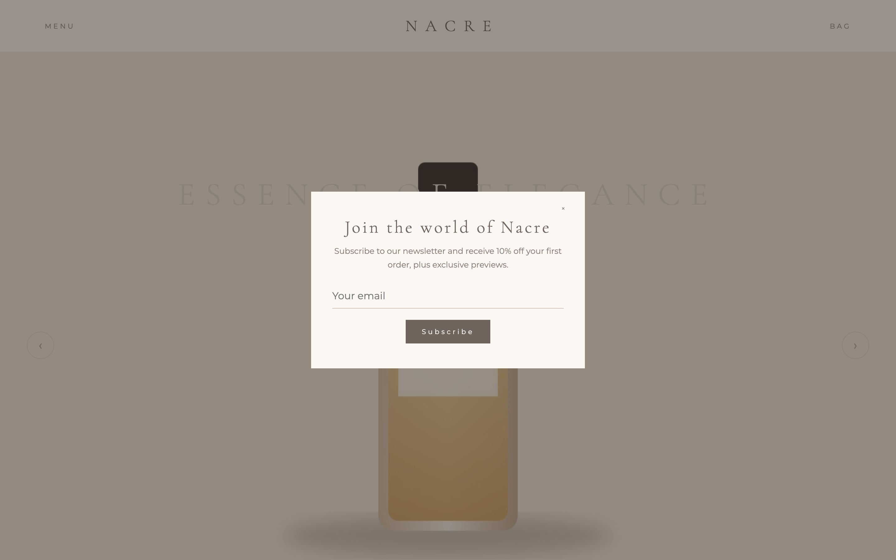
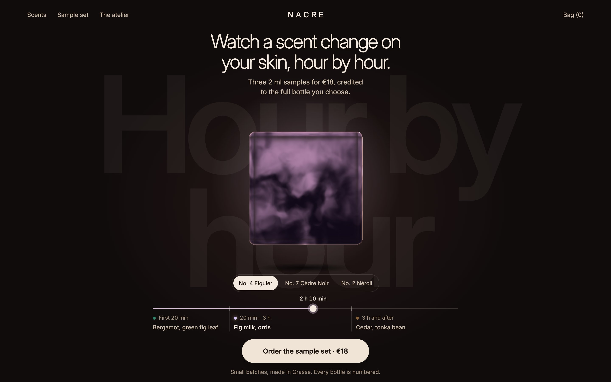
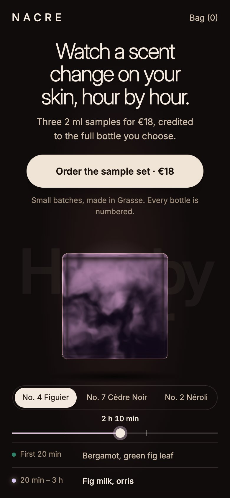
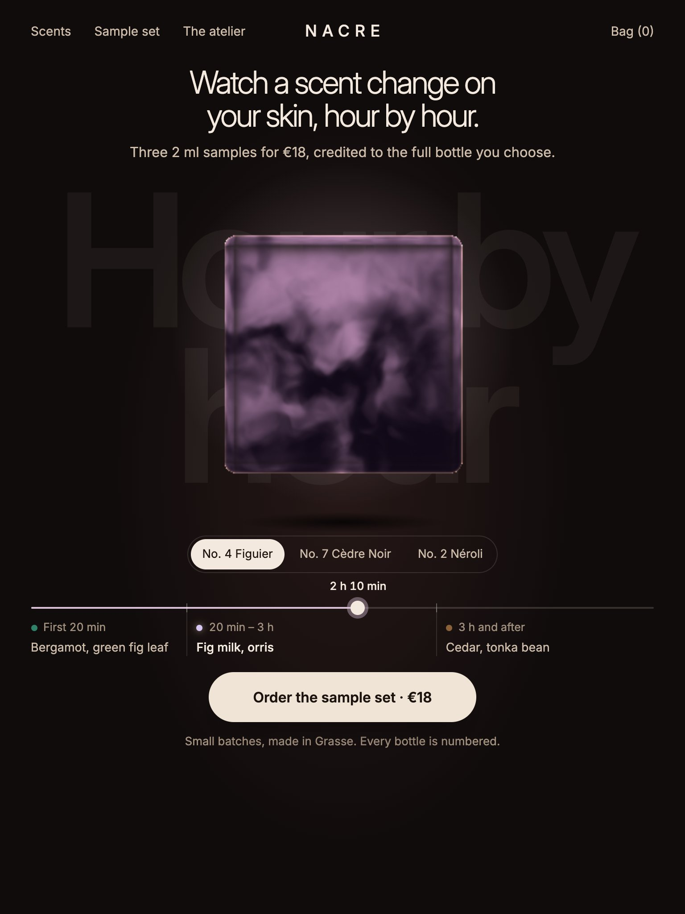

Hero revamp: before and after
Desktop · 1440×900
Drag the handle to compare the first screens. Green is better, red is worse; changes within run-to-run noise are marked.


BeforeAfter| Metric | Before | After | Change |
|---|---|---|---|
| Speed | |||
| LCP | 1120 ms | 324 ms | ▼ -796 ms (-71%) |
| TTFB | 151 ms | 151 ms | |
| Resource load delay | 280 ms | 0 ms | ▼ -280 ms (-100%) |
| Resource load time | 679 ms | 0 ms | ▼ -679 ms (-100%) |
| Element render delay | 19 ms | 173 ms | ▲ +154 ms (+811%) |
| CLS | 0 | 0.048 | ▲ +0.05 |
| First contentful paint | 436 ms | 324 ms | ▼ -112 ms (-26%) |
| Total blocking time | 0 ms | 203 ms | ▲ +203 ms |
| Actions fully visible after | 292 ms | 305 ms | within noise |
| Render-blocking files | 1 | 0 | ▼ -1 (-100%) |
| Web fonts | 72 KB | 71 KB | within noise |
| Font files before first paint | 0 | 1 | ▲ +1 |
| First-load weight | 0.15 MB | 1.03 MB | ▲ +0.88 (+587%) |
| Motion | |||
| Frame time p95 (2 s after load) | 16.7 ms | 33.4 ms | ▲ +16.7 ms (+100%) |
| Long frames (> 50 ms) | 0 | 1 | ▲ +1 |
| Motion left on under reduced motion | 2 | 0 | ▼ -2 (-100%) |
| Message | |||
| Headline words | 3 | 10 | ▲ +7 (+233%) |
| Headline lines | 1 | 2 | ▲ +1 (+100%) |
| Headline size | 51.84px | 45.92px | ▼ -5.92 (-11%) |
| Headline contrast (2nd-percentile pixel) | 1.44:1 | 15.94:1 | ▲ +14.5 (+1007%) |
| Subhead words | none | 13 | |
| Action | |||
| CTAs in first screen | 0 | 1 | ▲ +1 |
| Primary CTA visible without scrolling | – | yes | |
| Smallest CTA height | – | 56px | |
| Lowest CTA label contrast | – | 14.69:1 | |
| Layout | |||
| Horizontal overflow | 0px | 0px | |
| Visual share of first screen | 90% | 57% | ▼ -33 pts |
| Empty share of first screen | 9% | 40% | ▲ +31 pts |
| Template tells (heuristic) | 0 | 0 | |
| Access | |||
| Controls without a name | 0 | 0 | |
| Focus visible on primary CTA | – | yes | |
| Hero in a landmark | no | yes | ▲ now yes |
Phone · 390×844
Drag the handle to compare the first screens. Green is better, red is worse; changes within run-to-run noise are marked.

BeforeAfter| Metric | Before | After | Change |
|---|---|---|---|
| Speed | |||
| LCP | 1136 ms | 308 ms | ▼ -828 ms (-73%) |
| TTFB | 151 ms | 151 ms | |
| Resource load delay | 308 ms | 0 ms | ▼ -308 ms (-100%) |
| Resource load time | 696 ms | 0 ms | ▼ -696 ms (-100%) |
| Element render delay | 12 ms | 157 ms | ▲ +145 ms (+1208%) |
| CLS | 0.005 | 0.046 | ▲ +0.04 (+820%) |
| First contentful paint | 464 ms | 308 ms | ▼ -156 ms (-34%) |
| Total blocking time | 0 ms | 240 ms | ▲ +240 ms |
| Actions fully visible after | 291 ms | 298 ms | within noise |
| Render-blocking files | 1 | 0 | ▼ -1 (-100%) |
| Web fonts | 72 KB | 71 KB | within noise |
| Font files before first paint | 0 | 1 | ▲ +1 |
| First-load weight | 0.15 MB | 1.03 MB | ▲ +0.88 (+587%) |
| Motion | |||
| Frame time p95 (2 s after load) | 16.7 ms | 33.4 ms | ▲ +16.7 ms (+100%) |
| Long frames (> 50 ms) | 0 | 2 | ▲ +2 |
| Motion left on under reduced motion | 2 | 0 | ▼ -2 (-100%) |
| Message | |||
| Headline words | 3 | 10 | ▲ +7 (+233%) |
| Headline lines | 2 | 3 | ▲ +1 (+50%) |
| Headline size | 30px | 36.98px | ▲ +6.98 (+23%) |
| Headline contrast (2nd-percentile pixel) | 1.44:1 | 15.91:1 | ▲ +14.47 (+1005%) |
| Subhead words | none | 13 | |
| Action | |||
| CTAs in first screen | 0 | 1 | ▲ +1 |
| Primary CTA visible without scrolling | – | yes | |
| Smallest CTA height | – | 56px | |
| Lowest CTA label contrast | – | 14.69:1 | |
| Layout | |||
| Horizontal overflow | 0px | 0px | |
| Visual share of first screen | 90% | 36% | ▼ -54 pts |
| Empty share of first screen | 8% | 47% | ▲ +39 pts |
| Template tells (heuristic) | 0 | 0 | |
| Access | |||
| Controls without a name | 0 | 0 | |
| Focus visible on primary CTA | – | yes | |
| Hero in a landmark | no | yes | ▲ now yes |
Viewport · 768×1024
Drag the handle to compare the first screens. Green is better, red is worse; changes within run-to-run noise are marked.

BeforeAfter| Metric | Before | After | Change |
|---|---|---|---|
| Speed | |||
| LCP | 1140 ms | 328 ms | ▼ -812 ms (-71%) |
| TTFB | 151 ms | 151 ms | |
| Resource load delay | 278 ms | 0 ms | ▼ -278 ms (-100%) |
| Resource load time | 693 ms | 0 ms | ▼ -693 ms (-100%) |
| Element render delay | 11 ms | 177 ms | ▲ +166 ms (+1509%) |
| CLS | 0 | 0.076 | ▲ +0.08 |
| First contentful paint | 432 ms | 328 ms | ▼ -104 ms (-24%) |
| Total blocking time | 0 ms | 234 ms | ▲ +234 ms |
| Actions fully visible after | 291 ms | 314 ms | within noise |
| Render-blocking files | 1 | 0 | ▼ -1 (-100%) |
| Web fonts | 72 KB | 71 KB | within noise |
| Font files before first paint | 0 | 1 | ▲ +1 |
| First-load weight | 0.15 MB | 1.03 MB | ▲ +0.88 (+587%) |
| Motion | |||
| Frame time p95 (2 s after load) | 16.7 ms | 33.4 ms | ▲ +16.7 ms (+100%) |
| Long frames (> 50 ms) | 0 | 2 | ▲ +2 |
| Motion left on under reduced motion | 2 | 0 | ▼ -2 (-100%) |
| Message | |||
| Headline words | 3 | 10 | ▲ +7 (+233%) |
| Headline lines | 1 | 2 | ▲ +1 (+100%) |
| Headline size | 30px | 35.2px | ▲ +5.2 (+17%) |
| Headline contrast (2nd-percentile pixel) | 2.68:1 | 16.09:1 | ▲ +13.41 (+500%) |
| Subhead words | none | 13 | |
| Action | |||
| CTAs in first screen | 0 | 1 | ▲ +1 |
| Primary CTA visible without scrolling | – | yes | |
| Smallest CTA height | – | 56px | |
| Lowest CTA label contrast | – | 14.69:1 | |
| Layout | |||
| Horizontal overflow | 0px | 0px | |
| Visual share of first screen | 92% | 47% | ▼ -45 pts |
| Empty share of first screen | 7% | 46% | ▲ +39 pts |
| Template tells (heuristic) | 0 | 0 | |
| Access | |||
| Controls without a name | 0 | 0 | |
| Focus visible on primary CTA | – | yes | |
| Hero in a landmark | no | yes | ▲ now yes |
LCP breakdown
Where the time to the largest paint goes (web.dev subparts). Bars share one scale per viewport.
Desktop · 1440×900
TTFB 151 ms · Load delay 280 ms · Load time 679 ms · Render delay 19 ms · biggest: resource load time
TTFB 151 ms · Load delay 0 ms · Load time 0 ms · Render delay 173 ms · biggest: element render delay
Phone · 390×844
TTFB 151 ms · Load delay 308 ms · Load time 696 ms · Render delay 12 ms · biggest: resource load time
TTFB 151 ms · Load delay 0 ms · Load time 0 ms · Render delay 157 ms · biggest: element render delay
Viewport · 768×1024
TTFB 151 ms · Load delay 278 ms · Load time 693 ms · Render delay 11 ms · biggest: resource load time
TTFB 151 ms · Load delay 0 ms · Load time 0 ms · Render delay 177 ms · biggest: element render delay
Template tells
Heuristics from the DOM, computed styles and the screenshot's colours: judgment calls, reported as warnings, never failures.
No template tells before or after.
Findings
FAIL and WARN lines matched across the two audits.
Fixed 34
- FAILphone headline contrast over its backdrop (2nd-percentile pixel) 1.44:1, needs 3:1
- FAILphone no call-to-action button in the first screen
- FAILphone large first-screen image is loading="lazy": it delays LCP
- FAIL768x1024 headline contrast over its backdrop (2nd-percentile pixel) 2.68:1, needs 3:1
- FAIL768x1024 no call-to-action button in the first screen
- FAIL768x1024 large first-screen image is loading="lazy": it delays LCP
- FAILdesktop headline contrast over its backdrop (2nd-percentile pixel) 1.44:1, needs 3:1
- FAILdesktop no call-to-action button in the first screen
- FAILdesktop large first-screen image is loading="lazy": it delays LCP
- WARNphone LCP resource load delay 308 ms (26% of LCP): the LCP file is found late. Put it in the HTML with fetchpriority="high", never lazy, no CSS/JS discovery
- WARNphone render-blocking: css2?family=Cormorant+Garamond:wght@300;400&family=Montserra
- WARNphone no subhead found under the headline: one plain sentence should say what it is and for whom
- WARNphone image 1800×1200 shown at 390×844: upscaled (1.42 image px per CSS px on a 2× screen), it looks soft. Serve a larger file in srcset
- WARNphone hero visual is JPG (before-nacre-bottle-1.jpg): AVIF or WebP is usually 25-50% smaller at the same quality
- WARNphone hero image has no srcset: every screen downloads the same 1800×1200 file
- WARNphone font-display auto/block on Cormorant Garamond, Montserrat: text stays invisible up to 3 s while the font loads (FOIT risk). Use swap with a size-adjusted fallback (next/font does this), or optional
- WARNphone the hero isn't inside <main> or <header>: screen-reader landmark navigation skips it
- WARNphone with reduced motion on, 2 looping animation(s) and 0 video(s) still play in the first screen
- WARN768x1024 render-blocking: css2?family=Cormorant+Garamond:wght@300;400&family=Montserra
- WARN768x1024 no subhead found under the headline: one plain sentence should say what it is and for whom
- WARN768x1024 image 1800×1200 shown at 768×1024: upscaled (1.17 image px per CSS px on a 2× screen), it looks soft. Serve a larger file in srcset
- WARN768x1024 hero visual is JPG (before-nacre-bottle-1.jpg): AVIF or WebP is usually 25-50% smaller at the same quality
- WARN768x1024 hero image has no srcset: every screen downloads the same 1800×1200 file
- WARN768x1024 font-display auto/block on Cormorant Garamond, Montserrat: text stays invisible up to 3 s while the font loads (FOIT risk). Use swap with a size-adjusted fallback (next/font does this), or optional
- WARN768x1024 the hero isn't inside <main> or <header>: screen-reader landmark navigation skips it
- WARN768x1024 with reduced motion on, 2 looping animation(s) and 0 video(s) still play in the first screen
- WARNdesktop render-blocking: css2?family=Cormorant+Garamond:wght@300;400&family=Montserra
- WARNdesktop no subhead found under the headline: one plain sentence should say what it is and for whom
- WARNdesktop image 1800×1200 shown at 1440×900: upscaled (1.25 image px per CSS px on a 2× screen), it looks soft. Serve a larger file in srcset
- WARNdesktop hero visual is JPG (before-nacre-bottle-1.jpg): AVIF or WebP is usually 25-50% smaller at the same quality
- WARNdesktop hero image has no srcset: every screen downloads the same 1800×1200 file
- WARNdesktop font-display auto/block on Cormorant Garamond, Montserrat: text stays invisible up to 3 s while the font loads (FOIT risk). Use swap with a size-adjusted fallback (next/font does this), or optional
- WARNdesktop the hero isn't inside <main> or <header>: screen-reader landmark navigation skips it
- WARNdesktop with reduced motion on, 2 looping animation(s) and 0 video(s) still play in the first screen
New in the after audit 5
- WARNphone total blocking time 240 ms (median of 3)
- WARNphone frame timing over 2 s after load: p95 33.4 ms, 2 long frame(s) over 50 ms, 2 over 34 ms, 3 animation(s) running: the intro animation drops frames. Animate transform/opacity only, move work off the main thread
- WARN768x1024 total blocking time 234 ms (median of 3)
- WARN768x1024 frame timing over 2 s after load: p95 33.4 ms, 2 long frame(s) over 50 ms, 2 over 34 ms, 3 animation(s) running: the intro animation drops frames. Animate transform/opacity only, move work off the main thread
- WARNdesktop total blocking time 203 ms (median of 3)
Still open 0
None.
For the PR
The same summary as Markdown.
## Hero revamp: before → after | | Before | After | |---|---|---| | Failures | 9 | 0 | | Warnings | 25 | 5 | | Passes | 33 | 43 | | desktop | Before | After | | |---|---|---|---| | LCP | 1120 ms | 324 ms | ✓ better | | ↳ Resource load delay | 280 ms | 0 ms | ✓ better | | ↳ Resource load time | 679 ms | 0 ms | ✓ better | | ↳ Element render delay | 19 ms | 173 ms | ✕ worse | | CLS | 0 | 0.048 | ✕ worse | | First contentful paint | 436 ms | 324 ms | ✓ better | | Total blocking time | 0 ms | 203 ms | ✕ worse | | Actions fully visible after | 292 ms | 305 ms | within noise | | Render-blocking files | 1 | 0 | ✓ better | | Web fonts | 72 KB | 71 KB | within noise | | Font files before first paint | 0 | 1 | ✕ worse | | First-load weight | 0.15 MB | 1.03 MB | ✕ worse | | Frame time p95 (2 s after load) | 16.7 ms | 33.4 ms | ✕ worse | | Long frames (> 50 ms) | 0 | 1 | ✕ worse | | Motion left on under reduced motion | 2 | 0 | ✓ better | | Headline words | 3 | 10 | | | Headline lines | 1 | 2 | ✕ worse | | Headline size | 51.84px | 45.92px | | | Headline contrast (2nd-percentile pixel) | 1.44:1 | 15.94:1 | ✓ better | | Subhead words | none | 13 | | | CTAs in first screen | 0 | 1 | | | Primary CTA visible without scrolling | – | yes | | | Smallest CTA height | – | 56px | | | Lowest CTA label contrast | – | 14.69:1 | | | Visual share of first screen | 90% | 57% | ✕ worse | | Empty share of first screen | 9% | 40% | | | Focus visible on primary CTA | – | yes | | | Hero in a landmark | no | yes | ✓ better | | phone | Before | After | | |---|---|---|---| | LCP | 1136 ms | 308 ms | ✓ better | | ↳ Resource load delay | 308 ms | 0 ms | ✓ better | | ↳ Resource load time | 696 ms | 0 ms | ✓ better | | ↳ Element render delay | 12 ms | 157 ms | ✕ worse | | CLS | 0.005 | 0.046 | ✕ worse | | First contentful paint | 464 ms | 308 ms | ✓ better | | Total blocking time | 0 ms | 240 ms | ✕ worse | | Actions fully visible after | 291 ms | 298 ms | within noise | | Render-blocking files | 1 | 0 | ✓ better | | Web fonts | 72 KB | 71 KB | within noise | | Font files before first paint | 0 | 1 | ✕ worse | | First-load weight | 0.15 MB | 1.03 MB | ✕ worse | | Frame time p95 (2 s after load) | 16.7 ms | 33.4 ms | ✕ worse | | Long frames (> 50 ms) | 0 | 2 | ✕ worse | | Motion left on under reduced motion | 2 | 0 | ✓ better | | Headline words | 3 | 10 | | | Headline lines | 2 | 3 | ✕ worse | | Headline size | 30px | 36.98px | | | Headline contrast (2nd-percentile pixel) | 1.44:1 | 15.91:1 | ✓ better | | Subhead words | none | 13 | | | CTAs in first screen | 0 | 1 | | | Primary CTA visible without scrolling | – | yes | | | Smallest CTA height | – | 56px | | | Lowest CTA label contrast | – | 14.69:1 | | | Visual share of first screen | 90% | 36% | ✕ worse | | Empty share of first screen | 8% | 47% | | | Focus visible on primary CTA | – | yes | | | Hero in a landmark | no | yes | ✓ better | | 768x1024 | Before | After | | |---|---|---|---| | LCP | 1140 ms | 328 ms | ✓ better | | ↳ Resource load delay | 278 ms | 0 ms | ✓ better | | ↳ Resource load time | 693 ms | 0 ms | ✓ better | | ↳ Element render delay | 11 ms | 177 ms | ✕ worse | | CLS | 0 | 0.076 | ✕ worse | | First contentful paint | 432 ms | 328 ms | ✓ better | | Total blocking time | 0 ms | 234 ms | ✕ worse | | Actions fully visible after | 291 ms | 314 ms | within noise | | Render-blocking files | 1 | 0 | ✓ better | | Web fonts | 72 KB | 71 KB | within noise | | Font files before first paint | 0 | 1 | ✕ worse | | First-load weight | 0.15 MB | 1.03 MB | ✕ worse | | Frame time p95 (2 s after load) | 16.7 ms | 33.4 ms | ✕ worse | | Long frames (> 50 ms) | 0 | 2 | ✕ worse | | Motion left on under reduced motion | 2 | 0 | ✓ better | | Headline words | 3 | 10 | | | Headline lines | 1 | 2 | ✕ worse | | Headline size | 30px | 35.2px | | | Headline contrast (2nd-percentile pixel) | 2.68:1 | 16.09:1 | ✓ better | | Subhead words | none | 13 | | | CTAs in first screen | 0 | 1 | | | Primary CTA visible without scrolling | – | yes | | | Smallest CTA height | – | 56px | | | Lowest CTA label contrast | – | 14.69:1 | | | Visual share of first screen | 92% | 47% | ✕ worse | | Empty share of first screen | 7% | 46% | | | Focus visible on primary CTA | – | yes | | | Hero in a landmark | no | yes | ✓ better | Measured with hero-audit.mjs (Slow 4G + 4× CPU), median of 3 loads. Template tells and density are heuristics.